Tenha instalado Visual Studio Code e o Node.js na sua máquina.
📄Criando seu primeiro projeto
Observação: Por padrão, subpastas serão criadas dentro do diretório e2e de
acordo com o tipo de teste que você está realizando.
Navegue até o Diretório de Testes
Vá até o diretório cypress/e2e dentro do projeto. Este é o local padrão onde o Cypress
espera encontrar seus arquivos de teste.
caminhoDoProjeto/cypress/e2e/subpastas
Crie o Arquivo de Teste
Crie um novo arquivo com a extensão .cy.js. O nome do arquivo deve descrever o que o
teste vai abordar. Por exemplo:
meu_primeiro_teste.cy.js
📄Guia para criar um arquivo de teste estruturado
Neste guia, exploraremos como estruturar e criar rapidamente seu arquivo de teste em Cypress com os snippets
personalizados do projeto AXA.
📍Teste completo
Utilize o snippet test_completepara gerar uma estrutura completa de teste.
📍Título e teste
Utilize o snippet titlepara gerar rapidamente um bloco de título e teste.
📍Bloco de teste
Para um bloco de teste individual, use o snippettesting.
📄Execute seu arquivo de teste criado
Existem duas formas principais de executar seus testes com Cypress: usando o comando
npx cypress open para abrir a interface gráfica ou o comando npx cypress run para
executar os testes no terminal. Abaixo estão detalhes sobre ambos os métodos.
Interface Gráfica (GUI)
Abra o terminal no diretório do seu projeto.
Execute o comando:
O Cypress abrirá uma janela mostrando todos os arquivos de teste disponíveis.
Clique no seu arquivo de teste para executá-lo. Este modo é mais interativo e permite que você veja
os testes sendo executados, bem como qualquer saída ou erro. Veja a seguir:
Linha de Comando (CLI)
Abra o terminal no diretório do seu projeto.
Execute o comando:
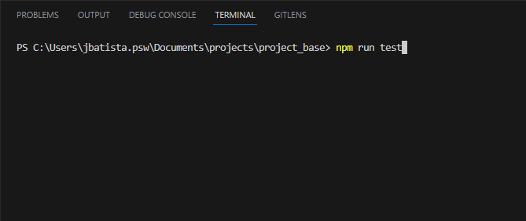
O Cypress executará todos os testes no terminal, sem abrir uma janela gráfica. Esse
modo é útil para integração contínua e para executar todos os testes de uma só vez sem interação do
usuário.
📌screenshot
Esta função realiza uma captura de tela da página atual e salva com um nome que contém o título do teste
atual e a data/hora. Além disso, ela restaura a altura original do html e body após a captura de tela. Para
usar essa função em seus testes, utilize o snippet screenshot. Veja
como usar a seguir:
📌action
Esta função é uma extensão personalizada do comando cy.get() do Cypress, amplamente utilizado
para selecionar um ou mais elementos DOM em testes end-to-end. A ideia por trás da função action é
proporcionar testes mais descritivos e fáceis de compreender. Aqui está um guia rápido sobre como usar a
função:
Parâmetros:
text: Uma descrição ou mensagem sobre a ação que está sendo realizada, isso é opcional. Por
padrão o text é action page.
atr: atributo Este é o mesmo tipo de seletor que você usaria com a
função cy.get() padrão do Cypress. Esse atributo sempre vem depois de uma tag de elemento, são essas
input, button, h3, h1,
id, placeholder, tabIndex, ng-model,
div.
screenshots: Para realizar uma captura de tela da página atual, isso é opcional por padrão
vem false, para ativar basta passar com true.
Utilize o snippet actionpara gerar rapidamente a função action.
📌generate_data
Esta função retorna um objeto contendo vários tipos de dados gerados aleatoriamente usando a biblioteca
faker. É útil para fornecer dados fictícios para os testes. Veja como usar a seguir:
Utilize o snippet generate_datapara gerar rapidamente a função faker.
💻exemplo
Veja como criar um teste, e interagir com os elementos de uma página a seguir:
📚 Criando subpastas e o arquivo: Deve criar subpastas dentro do diretório e2e
de
acordo com o tipo de teste que você está realizando. Também crie um novo arquivo com a extensão
.cy.js, o nome do arquivo deve
descrever o que o
teste vai abordar.
📚 Inspecionando elemento(HTML) da pagina: Com o botão direito do mouse, e logo após
inspecionar.
Como
exemplo vamos inspecionar o campo Usuário, Senha, e o botão
Entrar do site da Axa.
📚 Criando código: Como exemplo vamos usar o site da Axa.
📑- Inspecionando campoUsuário:
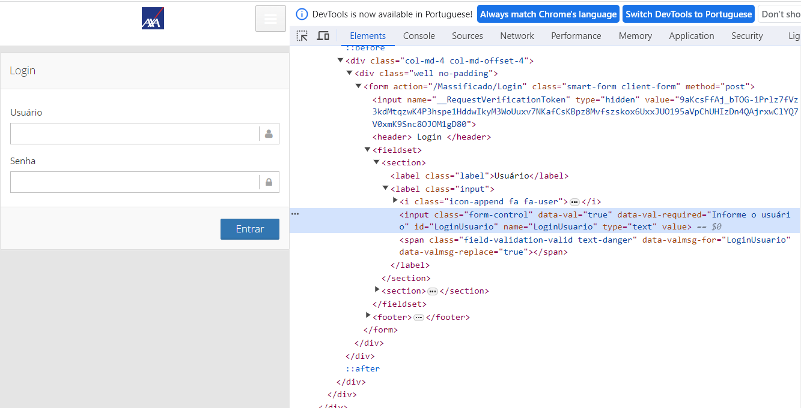
-Observe que tem um input Class="from-con..." e tem um atributo
id="LoginUsuario". Este atributo deve ser único, pois se houver mais de um valor para esse
atributo na página, pode ocorrer um erro.
- Código:
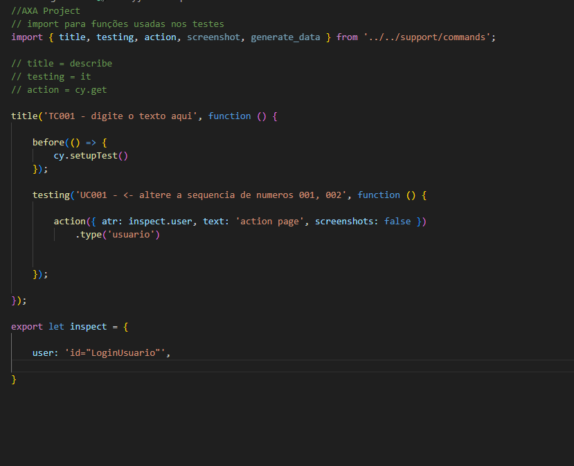
-Na construção do código, o valor do atributo é passado através da variável
user na declaração
export let inspect. Esse valor é então utilizado como parâmetro na função action.
O comando "type()" é utilizado para preencher um campo com um determinado valor.
Por exemplo, ao usar o comando "type('usuario')" em um campo de entrada, o valor 'usuario' será inserido
nesse
campo.
📑- Inspecionando campoSenha:
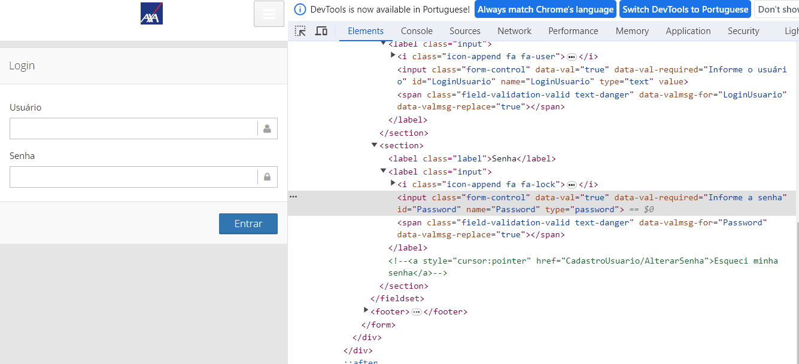
-Observe que tem um input Class="from-con..." e tem um atributo
id="Password". Este atributo deve ser único, pois se houver mais de um valor para esse
atributo na página, pode ocorrer um erro.
- Código:
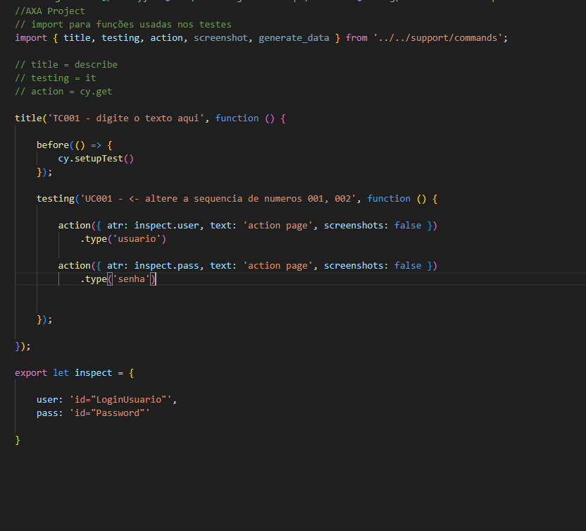
-Na construção do código, o valor do atributo é passado através da variável
pass na declaração
export let inspect. Esse valor é então utilizado como parâmetro na função action.
O comando "type()" é utilizado para preencher um campo com um determinado valor.
Por exemplo, ao usar o comando "type('senha')" em um campo de entrada, o valor 'senha' será inserido
nesse
campo.
📑- Inspecionando campoEntrar:
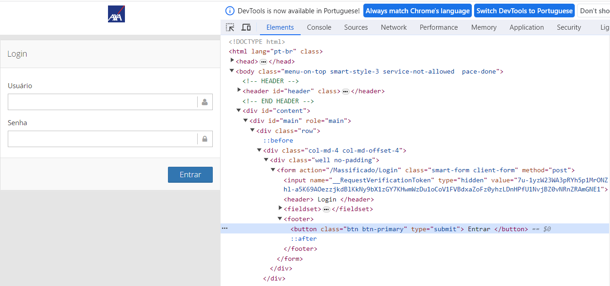
-Observe que tem um button... e tem um atributo
class="btn btn-primary". Este atributo deve ser único, pois se houver mais de um valor para
esse
atributo na página, pode ocorrer um erro.
- Código:
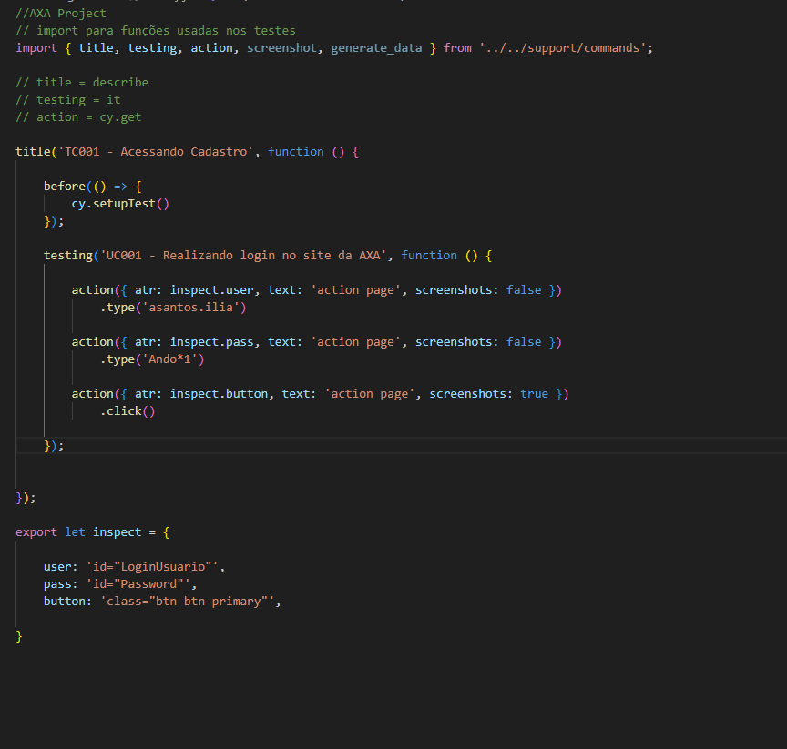
-Na construção do código, o valor do atributo é passado através da variável
button na declaração
export let inspect. Esse valor é então utilizado como parâmetro na função action.
O comando "click()" é utilizado para simular um clique em um elemento específico.
Por exemplo, ao usar o comando "click()" em um botão, o código irá executar a ação de clicar nesse botão.
Observação: Na função
action como parâmetro screenshots: true para realizar uma captura de tela.
📑- Inspecionando campoStatus:
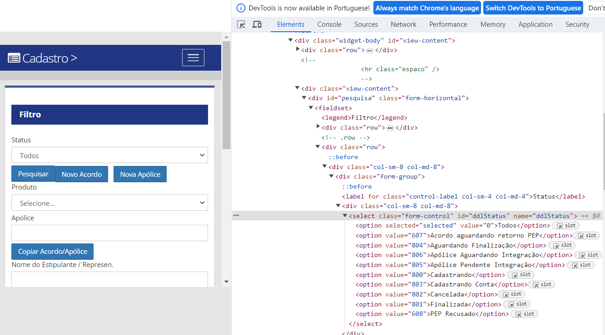
-Observe que tem um select class="from-"... e tem um atributo
id="ddlStatus", e em seguida temos o elemento option com diferentes valores, representando as
diversas opções disponíveis para seleção. Este atributo deve ser único, pois se houver mais de um valor para
esse
atributo na página, pode ocorrer um erro.
- Código:
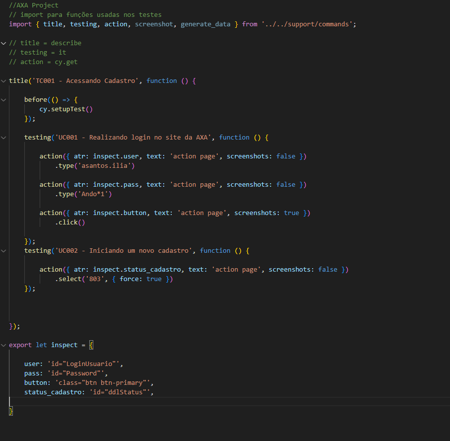
-Na construção do código, o valor do atributo é passado através da variável
status_cadastro na declaração
export let inspect. O comando "select()" é utilizado para escolher uma opção em um elemento de
seleção específico.
Por exemplo, ao usar o comando "select('803')" em um dropdown, o código irá executar a ação de selecionar
Cadastrando Conta.
📑- Inspecionando
campoNome do Estipulante / Represen:
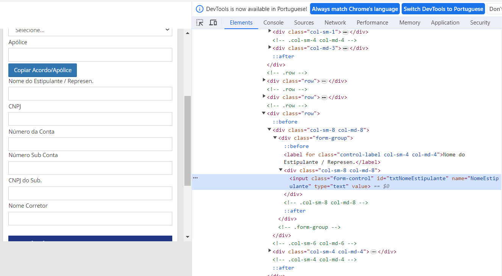
-Observe que tem um input class="from-"... e tem um atributo
id="txtNomeEstipulante". Este atributo deve ser único, pois se houver mais de um valor para
esse
atributo na página, pode ocorrer um erro.
- Código:
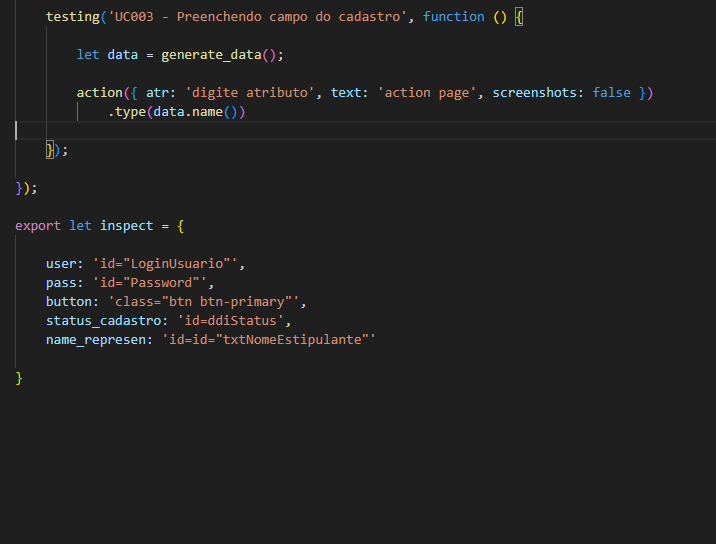
-Na construção do código, o valor do atributo é passado através da variável
name_represen na declaração
export let inspect. Esse valor é então utilizado como parâmetro na função action.
O comando "type()" é utilizado para preencher um campo com um determinado valor.
Por exemplo, ao usar o comando "type('texto')" em um campo de entrada, o valor 'texto' será inserido
nesse
campo.
Observação: No "type()" é usado a função
let data = generate_data(); para fornecer dados fictícios para o teste. Passando
data.name()
vai gerar um nome Faker.
📌Exemplos de como gerar outros dados fictícios usando a função
generate_data:📌